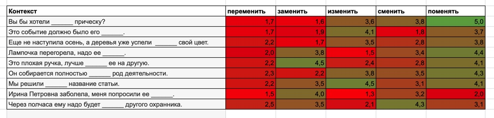
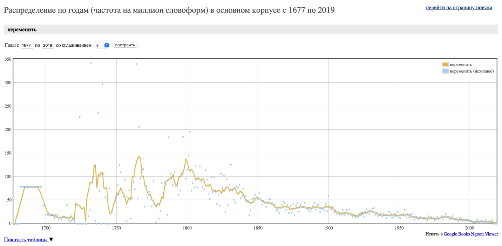

Вы бы хотели ______ прическу?
Это событие должно было его ______.
Еще не наступила осень, а деревья уже успели ______ свой цвет.
Лампочка перегорела, надо ее ______.
Это плохая ручка, лучше ______ ее на другую.
Он собирается полностью ______ род деятельности.
Мы решили ______ название статьи.
Ирина Петровна заболела, меня попросили ее ______.
Через полчаса ему надо будет ______ другого охранника.
Респонденты оценивали предложения небинарно. Для обработки данных была создана таблица контингентности, отсортирована так, что красным выделены ячейки, которые отражают наименее подходящие к контексту синонимы, по мнению опрошенных, а зеленым - наиболее подходящие. 
Опрос 11 участников показал, что глагол переменить является наименее подходящим ко всем контекстам, а наиболее подходящим является глагол поменять.
ВыводыПо результатам опроса глагол переменить наименее подходит ко всем данным контекстам, что позволяет предположить о его устаревании. Действительно, по данным НКРЯ частотность его употребления значительно снизилась к 2000-м годам.
Глаголы переменить и изменить плохо сочетаются со словами, обозначающими одушевленные лица. Например, к некорректным выражениям можно отнести следующие предложения:
Через полчаса ему надо будет переменить/изменить/ другого охранника.
Ирина Петровна заболела, меня попросили ее переменить/изменить/.